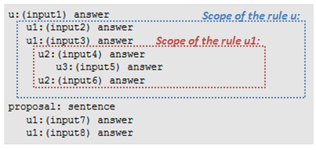

QiChat - Syntax¶
NAOqi Interaction engines - Table of Content | Introduction | Syntax | Overview | Cheat Sheet
Header keywords¶
concept¶
Syntax
concept:(name) [word1 word2 "word3 word4"]
Where:
- word1 and word2 are isolated words,
- “word3 word4” is a phrase, i.e. a group of several words,
- name is the name of the static concept gathering all the items in an ordered list.
Note: a static concept can contain choices, optional words and phrases, concepts (static and dynamic), functions (^rand, ^first), variables and conditions.
Usage
Defines a static list of items (words and/or phrases).
Warning
Phrase means a group of word, not a sentence, be aware that any punctuation character will be automatically removed.
Static concepts are global, in other words, they are usable in different Topics.
To use a concept in a rule, see: Concept call: ~.
Example
topic: ~introduction ()
language:enu
concept:(greetings) ^rand[hi hello "hey there"]
concept:(wine) [red white] wine
concept:(alcohol) [beer ~wine]
u:(~greetings) ~greetings
u:(do you have _~drink) yes, I have $1
u:(I want to drink something) do you want ~alcohol?
Execution
> hey there
hello
> do you have white wine?
yes, I have white wine
> I want to drink something
do you want beer?
> I want to drink something
do you want red wine?
dynamic¶
Syntax
dynamic:name
Note: a dynamic concept can only contain a list of words or phrases between a single choice [ ].
Usage
Declares a dynamic list of items (words and/or phrases). This list is local to a Topic.
Conditions
Dynamic concepts must be modified at runtime, using:
To use a concept in a rule, see: Concept call: ~. Concept are global, setConcept will affect the concept in all topics.
Example
topic: ~dynamic()
language: enu
dynamic:mp3
u:({please} ["i want" play] _~mp3) let's play $1
# call it when speech recognition is running
proxy = ALProxy("ALDialog")
proxy.setConcept("mp3","enu", ["mika", "queen", "village people", "boy george"])
include¶
Syntax
include: file.top
Note: include must be specified just after the name and the language of a topic, and before the first concept or rule.
Usage
Includes a file in the topic.
Conditions
The included file must be in the same folder than the topic that calls the include. One exception to this rule: Dialog Lexicon can be included anywhere even if it is not located in the same folder. For further details, see: How to use dialog lexicon in QiChat.
Effect
An included topic has the same behavior than topic:
- The included file is loaded as soon as the calling topic is loaded.
- The included file is activated as soon as the calling topic is activated
Example
topic: ~ok()
language: enu
# suppose my_lexicon_enu contains concept ~confirmation and ~negation
include:my_lexicon_enu.top
u:(hello) are you ok ?
u1:(~confirmation) yupi
u1:(~negation) Doh !
description¶
Syntax
description: cook
Description must be specified just after the include.
Usage
Current focus description is in variable $Dialog/FocusDescription. If focus doesn’t have description, then variable is empty.
overload¶
Syntax
overload: topicName
Warning
The overload keyword must be placed before the include one (if any).
Allows you to redefine another topic. The overloaded topic will never be activated.
Example
topic: ~mysetup()
language: enu
overload: mysetup
u:(raise your volume) I don't want to make it
pronunciation¶
Syntax
pronunciation:(word) wordPronunciation
Changes the default speech recognition way to pronounce a word. For example “I” should be pronounced “capitalize i”.
Note: Following words pronunciation are automatically managed by dialog engine: “I” in English and “à” in French.
topic: ~play()
language: enu
pronunciation:(I) [i]
u:(I want to play) let's play
language¶
Syntax
language: enu
Usage
Defines the language of the topic.
A topic can have the same name in different languages. For example in English “cars” topic and cars topic in French. In a language, a topic mush have a unique name.
For further details see:  Dialog - List of supported Languages
or
Dialog - List of supported Languages
or  Dialog - List of supported Languages.
Dialog - List of supported Languages.
topic¶
Syntax
topic: ~name ()
Usage
Defines the name to the topic. A topic must have one name and can have only one.
The name of a topic must be unique in a given language.
Related functions
def¶
Syntax
def:name($parameter1, $parameter2, ..) robot output
Note:
Every parameter is local to the function in which it has been defined. Outside of this function every occurrence of $parameter1, $parameter2, .. will be replaced by the value stored in ALMemory.
Usage
Defines a function which can be used in other qiChat rules as any function.
Related functions
Rules¶
User rule¶
Syntax
u:(Input) Answer
u:(Input)
Answer
Where:
- Input is the Human input,
- Answer is the Robot output.
Indentation and blank lines are ignored.
Usage
Makes the robot say or do the Answer when he hears the Input.
Effect
If the Human input matches, then the topic that contains the rule takes the focus.
For further details, see: Focus.
Conditions
The topic containing the user rules must be activated to answer.
Example
topic: ~introduction ()
language:enu
u:(hello) hello human
u:(how are you) I feel tired, my batteries are low
Execution
> hello
hello human
> how are you
I feel tired, my batteries are low
Related functions
User subrule¶
Syntax
u:(input1) answer
u1:(input2) answer
u1:(input3) answer
u2:(input4) answer
u3:(input5) answer
u2:(input6) answer
proposal: sentence
u1:(input7) answer
u1:(input8) answer
Where u1:, u2: and u3: are user subrules.
The indentation underlines the relationship between a rule and its subrules.
Usage
Allows creating several conversational contexts, making some rules activated if and only if a main User rule or Proposal has previously matched.
Activation / deactivation
At first, the User rules and Proposal are activated while subrules are deactivated.
- If a User rule matches and if it has a scope, its subrules (u1:) are activated; the other User rule remain activated.
- If one of the u1: subrule matches, then its own subrules (u2:) are activated, and the first-level rules (u1:) are deactivated.
- At anytime, if another User rule matches, then the previous subrules are deactivated.
- Scope
The subrules of a rule are called the scope of the rule.

{kind=link}
Example
topic: ~introduction ()
language:enu
u:(talk about animals) do you have a cat or a dog?
u1:(dog) is it a big dog?
u2:(yes) make sure he has enough space to run
u2:(no) it is so cute
u1:(cat) do you live in the countryside?
u2:(yes) does your cat goes outside?
u3:(yes) does he hunt mouses?
u2:(no) i hope your flat is big enough
u1:(none) neither do I
u:(talk about sport) what a good idea
proposal: Do you want to talk about sport?
u1:(yes) Cool
u1:(no) OK
Execution
> talk about animals
do you have a cat or a dog?
> I have a cat
do you live in the countryside?
> no
I hope your flat is big enough
> Now I want to talk about sport
what a good idea
Related functions
Proposal¶
Syntax
proposal: sentence
Where:
- sentence is a Robot output.
Usage
While rules are triggered by a Human input, to be said, a Proposal needs to be triggered with one of the topic progression functions:
Activation/deactivation
When a proposal is said, then it cannot be said again except if the proposal is re-activated by ^gotoReactivate.
Conditions
The Topic containing the user rules must be active.
Example
topic: ~introduction ()
language: enu
proposal: take a cup and fill it with milk
proposal: add 3 strawberries
proposal: add some vanilla ice cream
proposal: close the cup with the lid and shake it
proposal: you did it! you can enjoy your milkshake
u:(I want a milkshake)
ok, let's do it.
follow my instruction and say next when you are ready for the next step.
u:(next) ^nextProposal
Execution
> I want a milkshake
ok, let's do it.
follow my instruction and say next when you are ready for the next step.
>next
take a cup and fill it with milk
>next
add 3 strawberries
>next
add some vanilla ice cream
>next
close the cup with the lid and shake it
>next
you did it! you can enjoy your milkshake
>next
(no answer)
Related functions
Delimiters¶
Choice: [ ]¶
Syntax
u:([word1 word2 wordn]) answer
u:(input) [word1 word2 wordn]
u:([word1 word2 wordn]) [word1 word2 wordn] human
Where:
- word1 to wordn are words that could substitute with each other.
Warning
Never write [{xxx}] the dialog engine will accept it but this rule will always match, whatever you write inside.
Usage
- In a Human input: creates one rule accepting variations.
- In a Robot output: if the rule is triggered several times, the words will be used sequentially in order to create varying responses.
Example
topic: ~introduction ()
language:enu
u:([hi hello]) [hello hi] human
The Human input can be ‘hello’ or ‘hi’. The Robot output can be ‘hello human’ or ‘hi human’. By default answers are in a sequential order.
Execution
> hello
hello human
> hello
hi human
> hi
hello human
Related functions
Phrase delimiter: ” “¶
Syntax
u:([word1 "phrase 1"]) ["phrase 2" "phrase 3"]
Where:
- word1 is a word that could substitute with phrase 1.
- phrase 2 and phrase 3 are phrases used sequentially in order to create varying responses.
Usage
Allows you to place a phrase instead of a single word in a choice [] or an optional part {}.
Warning
Single quotes ‘ ‘ do not concatenate words together. If you need to concatenate words into a phrase, you must use double quotes “”.
Example:
u:(hello [“my mate” “my friend”]) is interpreted correctly, but
u:(hello [‘my mate’ ‘my friend’]) is interpreted as u:(hello [my mate friend])
Example
topic: ~introduction ()
language:enu
u:(["hello how are you" "hello are you OK"]) ["I am fine" "I am OK"]
Execution
> hello are you OK
I am fine
> hello how are you
I am OK
Optional part: { }¶
Syntax
u:(beginning of the sentence {optionalWord} end of the sentence) answer
u:(input) beginning of the sentence {optionalWord} end of the sentence
u:(beginning of the sentence {"optional phrase"} end of the sentence) answer
u:(input) beginning of the sentence {"optional phrase"} end of the sentence
Where:
- optionalWord is a word that could appear or not in the Human input or the Robot output.
- optional phrase is a phrase that could appear or not in the Human input or the Robot output.
Usage
Optional word or phrase, at the beginning, the middle or the end of a sentence.
Conditions
Inside a Choice: [ ], optional word for Human input can only be used inside a phrase:
- Not correct: u:([chocolate milk {bread}])
- Correct: u:([chocolate milk “{white} bread”])
Example 1
topic: ~introduction()
language:enu
u:(hello {buddy} how are you) hello I am fine
Execution of Example 1
>hello how are you
hello I am fine
>hello buddy how are you
hello I am fine
Example 2
topic: ~introduction()
language:enu
u:(hey) hello {human buddy}
Execution of Example 2
>hey
hello human
>hey
hello buddy
>hey
hello
In this example, each element inside of the Optional part: { } is picked with a probability of 1/3 (corresponds to a choice: [human buddy ^empty]).
Related rules
Special characters¶
Comments: #¶
Syntax
# comment
Comment is defined by character #. All the characters following # in the same line will be ignored.
Wildcard: *¶
Syntax
u:(sentence * sentence) answer
Usage
Matches any word or phrase.
Use wildcards sparingly
Too many wildcards can degrade performance of the automatic speech recognition.
Example
topic: ~introduction ()
language:enu
u:(my name is *) nice to meet you
u:(I like to * a lot) it sounds cool
Execution
> my name is David
nice to meet you
> I like to dance a lot
it sounds cool
> I like to play tennis a lot
it sounds cool
Related functions
Forbidden word: !¶
Syntax
u:(sentence !forbiddenWord) answer
Usage
Allows you to define a forbidden word in a Human input.
Example
topic: ~introduction ()
language:enu
u:(tell me a story) OK, a new one?
u:(!don't tell me a new one) great, I'll tell you a new story!
u:(don't tell me a new one) Ok, so I'll tell you the story of Peter Pan.
Execution
> tell me a story
OK, a new one?
> tell me a new one
great, I'll tell you a new story!
Tag: %¶
Syntax
proposal: %tag sentence
u:(input) %tag answer
Usage
Allows you to identify one or several proposal(s) or rule(s) by a tag. Tags can be activated or deactivated. If a tag is deactivated, then the sentence is false and won’t be said.
Example
topic: ~introduction ()
language:enu
proposal: %weather what is the weather like today?
u:(tell me a story) %story ok, I'll tell you the story of the three bears
Related functions
Input storing: _¶
Syntax
u:(sentence _[word1 word2]) answer $1
u:(sentence _~concept) answer $1
u:(sentence _*) answer $1
Where:
_[word1 word2] is the choice of words the robot will be able to catch and reuse.
$1 is the first caught word.
If there are several _, $2 is the second caught word, $3 is the third, etc. There is no limitation in variable number.
_~conceptName allows catching any word included in a concept. For further details, see: Concept call: ~.
_* allows catching any word said using the speech recognition.
Warning
_* is not available for all robots and all languages, it requires a specific remote speech recognition license.
For further details, see: Remote ASR Engine - List of supported Languages.
Note: giving a choice of words to recognize eases the speech recognition.
Usage
Allows catching one or several words in the Human input and reuse it within the Robot output directly following.
Tips: if you need to reuse the value elsewhere in the dialog, store it in a variable.
u:(my name is _*) nice to meet you $1 $name=$1
Example
topic: ~introduction ()
language:enu
u:(my name is _*) nice to meet you $1
u:(I like _[chocolate cheese]) do you want to eat $1 now?
Execution
> my name is David
nice to meet you David
> I like cheese
do you want to eat cheese now?
> I like chocolate
do you want to eat chocolate now?
Related functions
Variable: $¶
Syntax
# Affect a variable
u:(input) answer $variableName=value
# Use a variable in a robot answer
u:(input) answer $variableName
Where:
variableName is the name of the variable.
Note: For each variable $variableName,
an event e:variableName is also available. Variable are
stored in ALMemory. e:variableName subscribes to ALMemory event.
Note: $user/variable=value automatically stores in a database the value for the current user.
The current user is identified by ALDialogProxy::openSession method called by ALAutonomousLife.
Warning: Do not affect and read the variable in the same sentence. A variable is affected only when the sentence has been fully said.
Usage
Variables cannot be used the same way in Human input or Robot output. Indeed, in a Human input, it is only possible to trigger a rule by testing a condition on a variable if the associated event is declared in the input, or if a normal input is also present.
Variables are global, i.e. they can be used in several behaviors.
They don’t have a type and don’t need to be declared, they can be directly affected and used in rules.
They can be:
- set
- used in a Robot output
- used in conditions (see: Conditions: == > <> <).
Example
topic: ~introduction ()
language:enu
u:(I want some _[chocolate cheese]) OK $askedFood=$1
u:(what did I ask) ^first["you asked $askedFood" "I don't know"]
Execution
> what did I ask
I don't know
> I want some chocolate
OK
> what did I ask
you asked chocolate
Related functions
Conditions: == > <> <¶
Syntax
# condition on variable
u:($variableName==value) answer
# answer if variable>value
u:(input) answer $variableName>value
# answer if variable<value
u:(input) answer $variableName<value
# answer if variable different from value
u:(input) answer $variableName<>value
# condition on variable in human input, using an event
u:(e:FrontTactilTouched $FrontTactilTouched==1) answer
# condition on variable in human input
u:("input $variableName==value") answer
# condition on variable in answer
u:(input) ["answer $variableName==value" "another answer"]
Usage
Placed in a Human input or in a Robot output, a condition:
- triggers the rule if true,
- blocks the rule if false.
A condition based on an empty variable will be ignored.
The condition ordering does not matter.
If condition is false anywhere in quote, then the sentence in quote will not be said.
Example
topic: ~introduction ()
language:enu
u:(I want some _[chocolate cheese]) OK, you want some $1 $askedFood=$1
u:(what did I ask) ^first ["you asked $askedFood" "I don't know"]
u:(can I have more)
^first["$askedFood==chocolate sorry, too much chocolate could hurt you"
"yes, please take more $askedFood"]
See also: ^first.
Execution
> I want some chocolate
OK, you want some chocolate
> can I have more
sorry, too much chocolate could hurt you
> I want some cheese
OK, you want some cheese
> can I have more
yes, please take more cheese
Robot events: e:eventName¶
Syntax
u:(e:event) answer
# will answer whenever the event "event" is raised
u:([e:event sentence]) answer
# will answer whenever the event "event" is raised or the sentence is said.
u:("e:event sentence") answer
# will answer whenever the event "event" is raised and then the sentence is said
# (the event must be raised before saying the sentence)
u:(e:MyService.MySignal) answer
# will answer whenever the signal "MyService.MySignal" is raised
Note: For each event, e:eventName a
variable $eventName is also available.
Note: In Choregraphe qiChat events and input/output can have the same name. If an event have the same name than box input/output, the variable is only linked to the box and is not anymore usable with ALMemory.
Note: Only one event can be matched at a time. If several events are raised at the same time, other events with the same name are rejected until dialog engine answered. Other events with different names have two seconds to be matched by dialog engine or they will be rejected.
Note: Compatible events can be both ALMemory events or qiChat events but not signals.
Usage
Catches an event.
Allows to catch:
- any NAOqi Events providing information related to the robot: movement, battery information, face information,
- any ALDialog event list providing information about the Dialog engine,
- the events raised each time a value is assigned to a variable,
- any signal available in NAOqi services.
Note
Robot output cannot occur at high frequency, both data and event are merged.
Conditions
The subscribe will only occur when the topic is activated. The unsubscribe will occur when the topic is deactivated.
Example
topic: ~introduction ()
language:enu
u:(be my puppet) ok, touch my leg or ask me
u:([e:LeftBumperPressed "move this leg"]) ok I move the left leg
u:(e:LeftBumperPressed "light this leg") ok I turn leds on left leg
Execution
>be my puppet
ok, touch my leg or ask me
>(user touch the left bumper)
ok I move the left leg
>(user touch the left bumper) light this leg
ok I turn leds on left leg
Concept call: ~¶
Syntax
u:(~conceptName) answer
u:(input) answer ~conceptName
Usage
A Concept can be used both in Human input or Robot output to replace a list of item previously declared.
- In Human input, the rule will match if anyone of the items of the list is recognized.
- In Robot output, one item of the list will be said. Each call of the rule will call sequentially another item of the list.
Conditions
the Concept must be previously defined.
To define a concept, see: concept and dynamic.
Example
topic: ~introduction ()
language:enu
concept:(want) [want need desire like]
concept:(alcohol) [beer vodka "red wine"]
concept:(child-drink) ["orange juice" milk]
concept:(drink) [~alcohol ~child-drink]
u: (what do you do) I can help people with drinks
u:(I ~want to drink) what you ~want to drink?
u1:(* _~drink) do you want me to search $1 for you?
Execution
> what do you do
I can help people with drinks
> I need to drink
what do you want to drink?
> I want red wine
do you want me to search red wine for you?
Related functions
Forbidden characters¶
Forbidden characters in Human input¶
- Type only the words to be recognized.
- Do not use any punctuation mark.
- Do not use any special characters, for example:
- instead of ‘$’, type: ‘dollar’
- instead of ‘.’, type: ‘dot’
- Apostrophe ( ‘ ) is allowed but not the typographic apostrophe ( ’ ).
Japanese only:
- speech recognition does not support Fullwidth numbers [０ １ ２ ３ ４ ５ ６ ７ ８ ９]. Use Halfwidth numbers [0 1 2 3 4 5 6 7 8 9] instead.
Example
topic: ~introduction ()
language:enu
u:(have you a dollar for me) No, sorry, I have no pocket!
u:(I'm rich) good for you. Are you happy?
Forbidden characters in Robot output¶
- like all Special characters, $ is a reserved word, type dollar instead.
- warning: the character ‘.’ is a ponctuaction character, therefore, the robot will not read it:
- Instead of ‘toto.png’, type: ‘toto dot png’
- Apostrophe ( ‘ ) is allowed but not the typographic apostrophe ( ’ ).
Example
topic: ~introduction ()
language:enu
u:(have you a dollar for me) No, sorry, I have no pocket!
u:(I'm rich) good for you. Are you happy?
Rule functions and properties¶
^activate ^deactivate¶
Syntax
u:(input) answer ^deactivate(tag)
u:(input) answer ^activate(tag)
Usage
^deactivate function deactivates a tag, ^activate function reactivates a tag.
If a Robot output contains a deactivated tag, this Robot output cannot be triggered.
Example
topic: ~introduction()
language: enu
proposal: %greeting1 hello
proposal: nice to meet you
u:(hello) hello ^deactivate(greeting1)
u:(say something) ^nextProposal
Execution
> Hello
Hello
> say something
nice to meet you
^break¶
Syntax
u:(Input) Answer1 ^break answer2
Effect
Forces dialog engine to re-evaluate the rest of the sentence. Useful when data you want to say may change between the beginning and the end of a sentence. Dialog engine automatically re-evaluates data after:
Example
topic: ~break()
language: frf
u:(what is your position) my position after this sentence is ^break ^call(ALRobotPosture.getPosture())
c1:(_*) $1
^clear¶
Syntax
u:(input) ^clear(variableName)
Usage
Clears a variable. A cleared variables cannot be said. A sentence with cleared variable cannot be said. A condition with cleared variable is always false.
Example
topic: ~introduction ()
language:enu
u:(my name is _*) nice to meet you $name=$1
u:(what is my name) ^first["your name is $name" "I don't know"]
u1:(no) OK ^clear(name)
Execution
> my name is David
nice to meet you
> what is my name
your name is David
> no
OK
> what is my name
I don't know
Related functions
^empty¶
Syntax
u:(input) ^empty
Usage
Used when the robot should not answer.
Tip: can be used inside a Choice: [ ], e.g. the robot does not answer immediately to a Human input but only the second time.
Warning
Do not use empty string “” for this purpose: empty strings are skipped.
Example 1
topic: ~example1()
language:enu
u:(hello) [^empty "Hi human"]
#Warning :
#u:(hello) ["" "Hi human"] will not work the same way, as "" are skipped.
Execution of Example 1
>hello
(no robot output)
>hello
Hi human
Example 2
topic: ~example2()
language:enu
u:(hello) ^goto(tag)
u:(test) ^empty
u:(^empty) %tag "Hi human"
Execution of Example 2
>hello
Hi human
>test
(no robot output)
^enumerate¶
Syntax
u:(input) ^enumerate(~conceptName)
u:(input) ^enumerate(~conceptName, 2)
Usage
Enumerates all the elements of a static or dynamic concept.
A second parameter can be used to limit the number of enumerated elements. Calling several time the function will move forward in the concept.
Example
topic: ~introduction ()
language:enu
concept:(alcohols) [beer "[red white] wine"]
u:(what are your drinks) I have ^enumerate(~alcohols)
u:(enumerate your drinks) I have ^enumerate(~alcohols, 2)
Execution
> what are your drinks
I have beer red wine white wine
> enumerate your drinks
I have beer red wine
> enumerate your drinks
I have white wine
> enumerate your drinks
I have beer red wine
Related functions
^exist ^notExist¶
Syntax
topic: ~exist()
language: enu
u:(hello) ["^exist(42) the variable exist" "^notExist(42) the variable doesn't exist $42=1"]
Usage
A sentence that contains ^exist won’t be said if the variable parameter does not exist or is an empty string.
^first¶
Syntax
u:(input) ^first [answer1 answer2]
# Inside a choice, requires quotes
u:(input) [answer1 "^first [answer2 answer3]"]
Usage
When added before a Choice: [ ] in the Robot output part, instead of using each answer in turn, the interpreter always use the first valid Robot output.
A valid Robot output is an answer:
- without any condition nor non-affected variable,
- including affected variable(s),
- including a condition tested as true.
Using a non-affected variable in a robot output will make the rule invalid, i.e. the rule will not be said at all.
To avoid this situation, use the function ^first before a choice [ ].
This function tries to say the first valid output. If the first element of the choice is invalid because it contains a non-affected variable, it will try the second element, and so on.
Example
topic: ~introduction ()
language:enu
u:(my name is David) nice to meet you David $name=David
u:(my name is Paul) nice to meet you Paul $name=Paul
u:(what is my name) ^first["your name is $name" "I don't know"]
Execution
> what is my name
I don't know
> my name is David
nice to meet you David
> what is my name
your name is David
For further details, see : Conditions: == > <> <.
^goto¶
Syntax
u:(input1) %tag Answer
u:(input2) ^goto(tag)
Usage
The ^goto function allows you to:
- jump to a Robot output (in a user rule or an activated proposal) containing a specific tag.
- It can also be used to declare two Human inputs as equivalent.
- To jump to a deactivated Proposal, use ^gotoReactivate.
Example
topic: ~introduction ()
language:enu
u:(hello how are you) hello ^goto(how)
u:(how you are) %how I'm fine
Execution
> how are you
I'm fine
> hello how are you
hello I'm fine
Related functions
^gotoRandom¶
Syntax
u:(input) ^gotoRandom(tag)
proposal: %tag answer1
proposal: %tag answer2
Usage
The ^gotoRandom function is identical to ^goto except if the tag is used in several rules, it will chose one randomly.
Example
topic: ~introduction ()
language:enu
u:(hello) ^gotoRandom(hi)
proposal: %hi hello
proposal: %hi welcome
proposal: %hi hey
Execution
> hello
hey
> hello
hello
> hello
welcome
Related functions
- ^goto,
- ^gotoReactivate,
- ^topicTagReactivate,
- ^nextProposal,
- ^previousProposal,
- ^sameProposal,
- ^topicTag.
^gotoReactivate¶
Syntax
proposal: %tag Answer
u:(input) ^gotoReactivate(tag)
Usage
The ^gotoReactivate function allows to jump , inside the same topic, to a deactivated Proposal. To jump to a deactivated Proposal from another topic, use ^topicTagReactivate.
Example
topic: ~introduction ()
language:enu
proposal: %love I love you
u:(do you love me) yes, ^gotoReactivate(love)
u:(are you sure) sure, ^gotoReactivate(love)
Execution
I love you
> do you love me
yes, I love you
> are you sure
sure, I love you
Related functions
^topicTagReactivate¶
Syntax
proposal: %tag Answer
u:(input) ^topicTagReactivate(topic,tag)
Usage
The ^topicTagReactivate function allows you to jump to a deactivated Proposal from another topic and reactivate it.
Related functions
^topicRandom¶
Syntax
proposal: %tag Answer
u:(input) ^topicRandom
Usage
The ^topicRandom function allows you to jump to an activated Proposal among activated topics. If no proposal are available, function has no effect and event Dialog/NothingToSay is raised.
Related functions
^nextProposal¶
Syntax
u:(input) answer ^nextProposal
Usage
The function ^nextProposal says the first activated proposal in the Topic which has the Focus.
Example
topic: ~introduction ()
language: enu
u:(hi) hello ^nextProposal
proposal: how are you?
u1:(I'm fine) cool!
u1:(I'm tired) oh, you should take a nap
proposal: again!
Execution
> hi
hello how are you?
> I'm tired
oh, you should take a nap
> hi
hello again!
Related functions
^play¶
Syntax
topic: ~introduction ()
language: enu
u:(play * sound) ^play(sound)
Usage
^play is a beta function that can be removed at any version. ^play allows playing a sound with audio device soundSet instead of animated speech. See ALAudioDevice.
^previousProposal¶
Syntax
u:(input) answer ^previousProposal
Usage
The function ^previousProposal repeats the Proposal said previously to the last in the same Topic.
Example
topic: ~introduction ()
language: enu
u:(hi) hello ^nextProposal
proposal: how are you?
u1:(I'm fine) cool!
u1:(I'm tired) oh ^nextProposal
proposal: do you want some tea?
u1:(yes) I'm bringing you a cup of tea.
u1:(no) okay, ^nextProposal
proposal: what about some coffee?
u1:(yes) I'm bringing you a cup of coffee.
u1:(no) okay, maybe you should just take a nap.
u:(what did you say before) ^previousProposal
Execution
> hi
hello how are you?
> I'm tired
do you want some tea?
> no
OK, what about coffee?
> what did you say before
do you want some tea?
Related functions
^private¶
Syntax
u:^private(Input) Answer
Effect
Apply a private status to a rule. A private user rule is only active when its corresponding topic has the Focus.
Example
topic: ~music ()
language:enu
u:(I want to talk about music) OK!
u:^private(what are we talking about) we are talking about music
Execution
> I want to talk about music
OK!
> what are we talking about
we are talking about music
^rand¶
Syntax
u:(input) ^rand[answer1 answer2]
Usage
Can be added before a choice [] in the Robot output.
Instead of using each answer sequentially, the interpreter will choose randomly a valid Robot output.
A valid Robot output is:
- an answer including a condition tested as true or
- an answer including no condition at all.
Rand function in a choice needs to be inside quote.
For further details, see: Conditions: == > <> <.
Example
u:(hello) ^rand[hello hi "what's up" "hey there"]
^repeat¶
Syntax
u:(^repeat[word1 word2 word3]) answer
Note: Repeat allows you to use words or sentences from one to ten times.
Warning
This function is tricky. Avoid to start your first interaction with repeat. Avoid to use Wildcard * in repeat.
Usage
Allows a free combination of listed words.
The Human input is recognized if one or several word(s) among the list are said, regardless of the order.
^sameProposal¶
Syntax
u:(input) answer ^sameProposal
Usage
The function ^sameProposal repeats the last proposal said in the same topic.
Best practices
When using ^sameProposal, always make the robot say something like ‘Ok I’ll repeat’, ‘No problem,’ so that the user knows what to expect. It also makes the repetition clearer.
Example
topic: ~introduction ()
language: enu
u:(hi) hello ^nextProposal
proposal: how are you?
u1:(I'm fine) cool!
u1:(I'm tired) oh ^nextProposal
proposal: do you want some coffee?
u1:(yes) I'm bringing you a cup of coffee.
u1:(no) okay, maybe you should just take a nap.
u1:(can you repeat please) Ok I'll repeat. ^sameProposal
Execution
> hi
hello how are you?
> I'm tired
do you want some coffee?
> can you repeat please
Ok I'll repeat. Do you want some coffee?
> yes
I'm bringing you a cup of coffee.
Related functions
^size¶
Syntax
u:(input) ^size(~conceptName)
Usage
Returns the number of elements in a static of dynamic concept.
Example
topic: ~introduction ()
language:enu
dynamic:cocktails
concept:(alcohols) [beer "[red white] wine" ~cocktails]
u:(how many drinks do you have) I have ^size(~alcohols)
u:(do you have any cocktails) $size="^size(~cocktails)" ["$size==0 no" "yes I have $size cocktails"]
Execution
> how many drinks do you have
I have 3
> do you have any cocktails
no
Related functions
^stayInScope¶
Syntax
u:(input) answer
u1:(input1) answer ^stayInScope
u1:(input2) answer
Usage
Used in a rule or subrule to stay in the current scope when the corresponding rule has matched.
Example
u:(let's talk about animals) do you have a cat or a dog?
u1:(I {also} have a dog) dogs are funny ^stayInScope
u1:(I {also} have a cat) I once met a cat ^stayInScope
Execution
> let's talk about animals
do you have a cat or a dog?
> I have a dog
I love dogs
> I also have a cat
I once met a cat
User info methods¶
^getUserInfo¶
Syntax
#get information
u:(input) ^getUserInfo(dataName)
Where:
dataName is the name of the data you want to get the value.
Note: The data you will get are those about the focused user (the one with which the robot is speaking) from ALUserInfo in the user-info domain.
Usage
Placed in a Human input or in a Robot output it will be replaced by the value of the data. If the data has not been set the rule will be blocked. If the data has not been set anywhere in a quoted expression, then the expression will not be said. You can check that a data has a value with the function ^hasUserInfo.
Example
u:(Hi) Hi ^first["^getUserInfo(name), how are you ?" "what's your name"]
Execution
#if the focused user has a name, let's say Albert
> Hi
Hi Albert, how are you ?
#if the focused user doesn't have a name
> Hi
Hi what's your name ?
^setUserInfo¶
Syntax
#get information
u:(input) ^setUserInfo(dataName , value)
Where:
dataName is the name of the data you want to set the value. value is the value.
Note: The data you will set are those about the focused user (the one with which the robot is speaking) from ALUserInfo in the user-info domain. The data is stored in a long term memory, it is persistant after engine restart.
Example
concept:(name) [maupassant farugia bill marceau]
u:(my name is _~name) i will remember your name ^setUserInfo(name , $1)
^hasUserInfo¶
Syntax
#Check if an information about the focused user exists or not
u:(input) ^first["^hasUserInfo(dataName) the dataName has a value" "the dataName
doesn't have any value"]
Where:
dataName is the name of the data you want to check
Note: The data you check are those about the focused user, the one with which the robot is speaking, from ALUserInfo in the user-info domain.
Usage
Placed in a Human input or in a Robot output:
- triggers the rule if true,
- blocks the rule if false.
Example
u:(What can we do) ^first["^hasUserInfo(favoriteGames) Let's play a game !" "I
can dance for you !"]
Execution
#Let's suppose that the focused user likes games
> What can we do
Let's play game
#Let's suppose that the focused user like games
> What can we do
I can dance for you
^removeUserInfo¶
Syntax
#get information
u:(input) ^removeUserInfo(dataName)
Where:
dataName is the name of the data you want to remove.
Note: The data you will remove are those about the focused user (the one with which the robot is speaking) from ALUserInfo in the user-info domain.
Usage
Removing a data about a user.
Example
u:(forget my name) ok ^removeUserInfo(dataName)
u:(what is my name) ^first["Your name is ^getUserInfo(dataName)" "I don't
know your name"]
Execution
#if the focused user has a name Rémy
> what is my name
Your name is Rémy
> forget my name
ok
> what is my name
I don't know your name
Call functions and program logic¶
%script¶
Syntax
topic: ~addition()
language: enu
u:(1 + 2) result is
%script
print 1+2
%script
Usage
Calls python code from QiChat.
Execution
> 1+2
result is 3
^switchFocus¶
Syntax
topic: ~addition()
language: enu
# we suppose an application weather is installed on robot.
u:(start weather) ^switchFocus(weatherApplication/weatherBehavior)
Usage
Stops dialog engine and runs a Behavior identified by application uuid and Behavior name.
Warning
- If the behavior is at the root of the application, then switch focus parameter is ^switchFocus(uuid/.)
- Life needs to be started.
^call¶
Syntax
topic: ~call()
language: enu
u:(Input) Answer1 ^call(Method())
c1:(_*) $1 # say any result from call
c1:(result1) Answer2
u2:(Input) Answer3
c1:(result2) Answer4
u2:(Input) Answer5
Where:
c1: is a subrule related to the result of ^call,
u2: is a subrule in the scope of c1.
Warning: it is not possible to mix c1 and u1. It is necessary to create a scope for the answers if c1 is matched.
Effect
Calls a NAOqi method and manages the result.
Note: the evaluation of the call is always performed at the beginning of the sentence.
Example
topic: ~call()
language: enu
u:(tell me what is your position) Sure. ^call(ALRobotPosture.getPosture())
c1:(_*) $1
c1:(crouch) My position is crouch.
u2:(ok) What about you ?
Execution
# robot is sit
> tell me what is your position
Sure. sit
# robot is crouch
> tell me what is your position
Sure. My position is crouch.
> ok
What about you ?
^sCall¶
Syntax
topic: ~call()
language: enu
u:(go to rest) I am going to rest now. ^sCall(ALRobotPosture.getPosture()) I am in rest position now.
Usage
Allows to call a Naoqi method and manages the result. The evaluation of the call is performed at the sCall position in the sentence. It will interrupt the text to speech.
^pCall¶
Syntax
topic: ~pcall()
language: enu
u:(go to rest) ok ^pCall(ALMotion.rest()) I am going to rest.
Usage
Allows to make an asynchronous call of a Naoqi method.
^mode¶
Syntax
u:(input) answer1 "^mode(body_language_mode) word1 word2..." answer2
Usage
Changes the body language mode for the current text.
For further details, see ALAnimatedSpeech: Annotated Text.
^run¶
Syntax
u:(input) answer1 ^run(animation_full_name) answer2
Usage
Suspends the speech, runs an animation and resumes the speech.
For further details, see ALAnimatedSpeech: Annotated Text.
Related functions
^runTag¶
Syntax
u:(input) answer1 ^runTag(tag_name) answer2
Usage
Suspends the speech, runs an animation which has the mentioned tag and resumes the speech.
For further details, see ALAnimatedSpeech: Annotated Text.
Related functions
^runSound¶
Syntax
u:(input) answer1 ^runSound(soundSet/soundFile) answer2
u:(input) answer1 ^runSound(soundSet/soundFile, soundVolume) answer2
Usage
Suspends the speech, plays a sound and resumes the speech.
For further details, see ALAnimatedSpeech: Annotated Text.
Related functions
^start¶
Syntax
u:(input) answer1 ^start(behavior) answer2
Usage
Starts behaviors or animations.
For further details, see ALAnimatedSpeech: Annotated Text.
Related functions
^startTag¶
Syntax
u:(input) answer1 ^startTag(tag_name) answer2
Usage
Starts an animation which has the mentioned tag.
For further details, see ALAnimatedSpeech: Annotated Text.
Related functions
^startSound¶
Syntax
u:(input) answer1 ^startSound(soundSet/soundFile) answer2
u:(input) answer1 ^startSound(^startSound(soundSet/soundFile, soundVolume)) answer2
Usage
Plays a sound in background.
For further details, see ALAnimatedSpeech: Annotated Text.
Related functions
^stop¶
Syntax
u:(input) answer1 ^stop(behavior) answer2
Usage
Stops a running behavior or an animation.
For further details, see ALAnimatedSpeech: Annotated Text.
Related functions
^stopTag¶
Syntax
u:(input) answer1 ^stopTag(tag_name) answer2
Usage
Stops a running animation which has the mentioned tag.
For further details, see ALAnimatedSpeech: Annotated Text.
Related functions
^stopSound¶
Syntax
u:(input) answer1 ^stopSound(soundSet/soundFile) answer2
Usage
Stops a sound.
For further details, see ALAnimatedSpeech: Annotated Text.
Related functions
^wait¶
Syntax
u:(input) answer1 ^wait(animation) answer2
Usage
Waits until a running behavior or an animation has finished.
For further details, see ALAnimatedSpeech: Annotated Text.
^waitTag¶
Syntax
u:(input) answer1 ^waitTag(tag_name) answer2
Usage
Suspends the speech, waits for the end of the animation which has the mentioned tag and resumes the speech.
For further details, see ALAnimatedSpeech: Annotated Text.
^waitSound¶
Syntax
u:(input) answer1 ^waitSound(soundSet/soundFile) answer2
Usage
Suspends the speech, waits for the end of the sound and resumes the speech.
For further details, see ALAnimatedSpeech: Annotated Text.
Topic properties¶
^notInEmbeddedASR¶
Syntax
topic: ~introduction ^notInEmbeddedASR ()
Usage
Prevents the automatic loading of the rules in the speech recognition engine.
By default, the user rules contained in a topic are loaded into the embedded speech recognition engine. If ^notInEmbeddedASR property is used, none of the user rules are loaded into the embedded ASR engine. Very short words or rules with many * can trigger whatever we say.
^noPick¶
Syntax
topic: ~introduction ^noPick ()
Usage
Prevents the topic from getting randomly the Focus.
The Topic can still get the focus when a rule matches, but the Dialog engine cannot decide by itself to give the focus.
^noStay¶
Syntax
topic: ~introduction ^noStay ()
Usage
Prevents the topic from keeping the Focus.
If a rule matches in the topic, the Robot output is executed, but the Focus stays on the previous topic.
^preProcess¶
Syntax
topic: ~introduction ^preProcess ()
Usage
Allows a double topic match if another rule has already matched.
Example
topic: ~topic1()
language: enu
u:(hello) hello.
topic: ~topic2 ^preProcess()
language: enu
u:(e:FrontTactilTouched) you touched me.
Execution
> hello (while touching head FrontTactilTouched)
you touched me. Hello
^resetOnFocus¶
Syntax
topic: ~introduction ^resetOnFocus ()
Usage
By default a proposal can be said only once.
^resetOnFocus reactivates all proposals of a Topic when:
- the topic gets the Focus and
- all his proposals has been previously deactivated.
^fallback¶
Syntax
topic: ~introduction ^fallback ()
Usage
Give the lowest priority to the rules contained in this topic.
Its rules will be taken in consideration after the rules of:
- the main section of the Topic having the focus,
- the main section of all Topics - ^fallback excepted,
- the recover sections of all topics.
Transformation rules¶
Skin: s:¶
Syntax
s:(Answer) Modifications
s:(Answer)
Modifications
Where:
- Answer is the Robot output we want to match to apply this skin
- Modifications the modifications ^addword or/and ^replace we want to apply to the answer
Usage
When a Robot output matches a skin the robot says the Answer after Modifications are applied.
^addword¶
Syntax
s:(Answer) ^addword(Expression, Position, Frequency)
Where:
Answer is the Robot output to be matched
Expression can be any string (word(s), concept...)
Position is the position where you want to add the expression in the sentence.
This parameter can be:
- an integer: for instance “2” if you want to put the Expression in the second position
- “end” if you want the Expression to be added at the end of the sentence
- “start” if you want the Expression to be added at the beginning of the sentence
Frequency represents the probability of the skin to be applied (1:always apply, 0:never apply)
Usage
Add an Expression in each Robot output matching the skin.
Conditions
The rule must be active.
Example
topic: ~introduction ()
language:enu
u:(hello) hello human
u:(how are you) I am fine
s:(hello human) ^addword(I am your father, end, 1)
s:(*) ^addword(hey, start, 1)
Execution
> hello
hey hello human I am your father
> how are you
hey I am fine and you
^replace¶
Syntax
s:(Answer) ^replace(Expression1, Expression2, Frequency)
Where:
- Answer is the Robot output to be matched
- Expression1 can be any string (word(s), concept...) you want to replace
- Expression2 can be any string (word(s), concept...) you want to put instead of Expression1
- Frequency is the probability of the skin to be applied (1:always, 0:never)
Usage
Replaces Expression1 with Expression2 in each Robot output matching the skin.
Conditions
The rule must be active.
Example
topic: ~introduction ()
language:enu
u:(hello) hello human
u:(what do you like to do) I like to speak with you human
u:(do you want to play) yes human we can play together
s:({*} human {*}) ^replace(human, Michael, 1)
s:({*} speak {*}) ^replace(speak, play, 1)
If you are not familiar with {*} check: Wildcard: * to under Optional part: { }.
Execution
> hello human
hello Michael
> what do you like to do
I like to play with you Michael
> do you want to play
yes Michael we can play together
^defined_function¶
Syntax
^defined_function($parameter1, $parameter2, ..)
Usage
Allows you to use a function previously defined with def.
Example
topic: ~test()
language: enu
def:greets($age) ^first["$age > 18 Mister" "kid"]
u:(I am _* years old) Hello ^greets($1)
Execution
> I am 20 years old
Hello Mister
> I am 10 years old
Hello kid
qiChat events¶
qiChat events cannot be used with ALMemory. They are only usable in a qiChat event.
-
Event:callback(std::string eventName, std::string value, std::string subscriberIdentifier)¶
"Dialog/Failure" Raised when 3 Dialog/Fallback or 3 Dialog/NotUnderstood have been raised consecutively or a mix.
This event is only usable in qichat rules, not with ALMemory.
-
Event:callback(std::string eventName, std::string value, std::string subscriberIdentifier)¶
"Dialog/Fallback" Raised when a qichat fallback rule matches.
This event is only usable in qichat rules, not with ALMemory.
-
Event:callback(std::string eventName, std::string value, std::string subscriberIdentifier)¶
"Dialog/SameRule" Raised when a rule is triggered twice in a row. Allows you to avoid repetitions.
This event is only usable in qichat rules, not with ALMemory.
-
Event:callback(std::string eventName, std::string value, std::string subscriberIdentifier)¶
"Dialog/NoOneSpeak5" Nobody (neither the robot nor the human) has spoken for 5 seconds.
This event is only usable in qichat rules, not with ALMemory.
-
Event:callback(std::string eventName, std::string value, std::string subscriberIdentifier)¶
"Dialog/NoOneSpeak10" Nobody (neither the robot nor the human) has spoken for 10 seconds.
This event is only usable in qichat rules, not with ALMemory.
-
Event:callback(std::string eventName, std::string value, std::string subscriberIdentifier)¶
"Dialog/NoOneSpeak15" Nobody (neither the robot nor the human) has spoken for 15 seconds.
This event is only usable in qichat rules, not with ALMemory.
-
Event:callback(std::string eventName, std::string value, std::string subscriberIdentifier)¶
"Dialog/NoOneSpeak20" Nobody (neither the robot nor the human) has spoken for 20 seconds.
This event is only usable in qichat rules, not with ALMemory.
-
Event:callback(std::string eventName, std::string value, std::string subscriberIdentifier)¶
"Dialog/NoOneSpeak" Nobody (neither the robot nor the human) has spoken for the number of seconds that the event contains.
This event is only usable in qichat rules, not with ALMemory.
-
Event:callback(std::string eventName, std::string value, std::string subscriberIdentifier)¶
"Dialog/NotSpeaking5" Human hasn’t said anything for 5 seconds.
This event is only usable in qichat rules, not with ALMemory.
-
Event:callback(std::string eventName, std::string value, std::string subscriberIdentifier)¶
"Dialog/NotSpeaking10" Human hasn’t said anything for 10 seconds.
This event is only usable in qichat rules, not with ALMemory.
Example
u:(e:Dialog/NotSpeaking10) are you still there?
-
Event:callback(std::string eventName, std::string value, std::string subscriberIdentifier)¶
"Dialog/NotSpeaking15" Human hasn’t said anything for 15 seconds.
This event is only usable in qichat rules, not with ALMemory.
-
Event:callback(std::string eventName, std::string value, std::string subscriberIdentifier)¶
"Dialog/NotSpeaking20" Human hasn’t said anything for 20 seconds.
This event is only usable in qichat rules, not with ALMemory.
-
Event:callback(std::string eventName, std::string value, std::string subscriberIdentifier)¶
"Dialog/NotUnderstood" Not raised by the system but matchable event. Occurs when the robot hears some human input but no rule matches.
This event is only usable in qichat rules, not with ALMemory.
Example
u:(e:Dialog/NotUnderstood) sorry, I didn't understand.
-
Event:callback(std::string eventName, std::string value, std::string subscriberIdentifier)¶
"Dialog/NotUnderstood2" Not raised by the system but matchable event. Occurs when the robot didn’t understand 2 or more chains in a row.
This event is only usable in qichat rules, not with ALMemory.
-
Event:callback(std::string eventName, std::string value, std::string subscriberIdentifier)¶
"Dialog/NotUnderstood3" Not raised by the system but matchable event. Occurs when the robot didn’t understand 3 or more chains in a row.
This event is only usable in qichat rules, not with ALMemory.
-
Event:callback(std::string eventName, std::string value, std::string subscriberIdentifier)¶
"Dialog/SpeakFailure" Not raised by the system but matchable event. Occurs when a rule matches but the answer is empty (contains an empty variable / concept, a deactivated tag...). Then the robot won’t talk.
This event is only usable in qichat rules, not with ALMemory.
-
Event:callback(std::string eventName, std::string value, std::string subscriberIdentifier)¶
"Dialog/NothingToSay" Not raised by the system but matchable event. Occurs when ^topicRandom didn’t find any proposal to say.
This event is only usable in qichat rules, not with ALMemory.